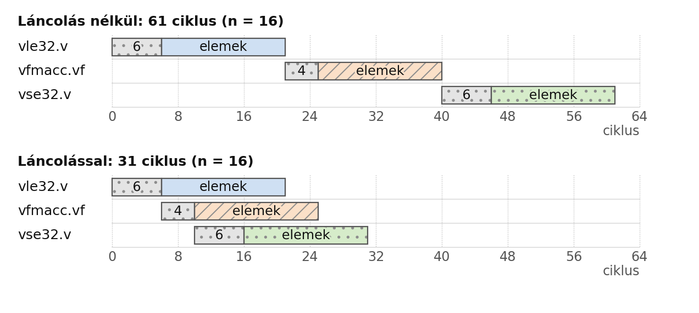

Az előző alfejezet saxpy-ja AVX2-re készült: 256 bites
regiszter, nyolc float, a ciklusban a 8-as lépésköz
beégetve. Ha jön egy 512 bites processzor, ez a bináris a szélesebb
regiszterek felét sem használja; ha egy 128 bites gépre visszük, el sem
indul. Minden új regiszterszélességhez új intrinsics-kód, új fordítás és
új tartalék út kell.
A RISC-V V kiterjesztése (RVV) és az Arm
SVE másképp gondolkodik: a program nem tudja előre,
milyen széles a regiszter, hanem futás közben megkérdezi. Ugyanaz a gépi
kód 128 bites és 1024 bites hardveren is helyes, csak más számú
iterációval. Egy 1000 elemű saxpy ciklusa a könyv
modelljében 128 bites regiszterekkel 250, 512 bitesekkel 63 iterációt
fut, változtatás nélkül. Ezt hívjuk
vektorhossz-független (vector-length agnostic)
programozásnak.
Az ötlet a klasszikus vektorszámítógépektől (például a Cray gépeitől) származik: a gépnek van egy vektorhossz-regisztere, amely megmondja, hány elemmel dolgozzon a következő utasítás. A ciklus minden körben beállítja a hosszt a hátralévő elemszám alapján, feldolgoz ennyit, majd lép. Ez a strip mining: a hosszú tömböt hardver méretű „csíkokra” vágjuk. Az utolsó, rövidebb csík ugyanazzal a kóddal megy, maradékciklus nincs.
Figyeld meg: a négy sor kódja azonos, csak a regiszterszélesség (VLEN) más. A második sorban a hardver egy másik, szintén megengedett szabályt követ, és a végét két 3 elemes csíkra osztja.
Definíció. Az RVV-ben 32 vektorregiszter van
(v0–v31), mindegyik VLEN
bites; ezt a megvalósítás rögzíti (2 hatványa). A SEW
(selected element width) az elemszélesség (8, 16, 32 vagy 64 bit),
amelyet a program választ. Az LMUL azt mondja meg, hány
regiszter alkot egy csoportot (1, 2, 4 vagy 8; törtértékek is léteznek,
ezeket itt nem tárgyaljuk) [S-RVV].
A képlet szerint a VLMAX a regisztercsoportba férő elemek száma. VLEN
= 128, SEW = 32 és LMUL = 1 mellett 4; LMUL = 8 mellett 32, de akkor a
32 regiszterből csak 4 csoport marad (v0, v8,
v16, v24), és a csoport kezdőregisztere LMUL
többszöröse kell legyen.
A vl vezérlőregiszter a következő
vektorutasítások által feldolgozott elemek számát tárolja. A
vsetvli rd, rs1, e32, m1, ta, ma utasítás
beállítja SEW-t és LMUL-t, a kért elemszámból (AVL, az rs1
értéke) kiszámítja vl-t, és visszaírja rd-be.
Az RVV 1.0 szabálya:
| Feltétel | vl |
|---|---|
| AVL VLMAX | AVL |
| VLMAX AVL 2·VLMAX | és VLMAX közötti érték, a megvalósítás választ |
| AVL 2·VLMAX | VLMAX |
A táblázat lényege: a program nem feltételezheti,
hogy vl egyenlő VLMAX-szal; mindig a visszaadott értékkel
kell lépnie. A ta (tail agnostic) azt jelzi, hogy a
vl utáni elemek tartalma nem érdekel bennünket, a
ma (mask agnostic) ugyanezt a kikapcsolt elemekre mondja; a
hardver ilyenkor meghagyhatja őket vagy egyesekkel töltheti fel.
# void saxpy(size_t n, float a, const float *x, float *y)
# a0 = n, fa0 = a, a1 = x, a2 = y
saxpy:
vsetvli a4, a0, e32, m1, ta, ma # a4 = vl <= hátralévő elemek
vle32.v v0, (a1) # x[...]: vl elem betöltése
vle32.v v8, (a2) # y[...]
vfmacc.vf v8, fa0, v0 # v8 += fa0 * v0
vse32.v v8, (a2) # y visszaírása
sub a0, a0, a4 # ennyi maradt
slli a4, a4, 2 # elemből bájt
add a1, a1, a4
add a2, a2, a4
bnez a0, saxpy
retAz utótagok az operandusok fajtáját jelzik: .v vektor,
.vf vektor és skalár lebegőpontos regiszter,
.vv két vektor. A vle32.v/vse32.v
pontosan vl darab 32 bites elemet tölt be és tárol. A
vfmacc összevont szorzás-összeadás, mint az AVX és NEON a gyakorlatban FMA-ja. A kód három
okból hordozható:
vl-lel lépnek.vsetvli kisebb
vl-lel kezeli, ezért nincs maradékciklus.n = 0 esetén vl = 0, a vektorutasítások
semmit sem csinálnak, a ciklus egyszer fut le üresen.Az iterációnkénti többlet (a vsetvli és a
mutatóléptetés) LMUL növelésével kisebb arányú lesz: egy iteráció
továbbra is 10 utasítás, de több elemet dolgoz fel.
Továbbvitt eredmény. A vektorhossz-független
modell: a program a hátralévő elemszámot adja a hardvernek, az
visszaad egy vl értéket (RVV: vsetvli; SVE: a
whilelt predikátum), és a ciklus ennyivel lép. Így ugyanaz
a bináris helyes bármely regiszterszélességen, maradékciklus nélkül; a
párhuzamosság mértéke hardvertulajdonság, nem programkonstans. Ezt a
szemléletet viszik tovább a SIMT, warpok és
divergencia és a Szisztolikus tömbök és a
TPU-elv gépei.
A maszk az RVV-ben a v0 regiszter bitjeiben van:
vmfgt.vf v0, v1, ft0 sávonként egy bitet állít (igaz, ahol
a v1 elem nagyobb ft0-nál), és a
v0.t utótagú utasítás csak a bekapcsolt elemeket dolgozza
fel. Ez ugyanaz a predikáció, amelyet a VLIW és EPIC: a fordítóra bízott párhuzamosság
alfejezetben a statikus ütemezésnél láttunk: a feltételes ág helyett az
utasítás hatása kapcsolható ki.
A nem folytonos hozzáférésre három utasításcsalád van:
vlse32.v v1, (a1), t1 minden t1 bájtra olvas
egy elemet (például egy mátrix oszlopát);vluxei32.v v1, (a1), v2 a v2-ben lévő
bájteltolásokról olvas;vlseg2e32.v v0, (a1) egy AoS elrendezés két mezőjét két
regiszterbe válogatja szét. Ez az SoA-átrendezést a hardverre
bízza.A redukciónak két alakja van. A
vfredosum.vs vd, vs2, vs1 sorrendtartó:
elemenként, indexrendben adja hozzá vs2 elemeit
vs1[0]-hoz, eredménye minden VLEN-en azonos a skalár
cikluséval. A vfredusum.vs
sorrendfüggetlen: a hardver fa alakban is összegezhet,
ezért gyorsabb lehet, de az eredmény a megvalósítástól és
vl-től függhet. Ez az átrendezési dilemma, amelyet az AVX és NEON a gyakorlatban alfejezetben láttunk,
itt utasításszinten választható.
A klasszikus vektorgépben egy vektorutasítás nem egyszerre készül el: egy indulási idő (startup) után ciklusonként egy elem (vagy sávonként egy) hagyja el a futószalagot. Ha a következő utasítás az előző eredményére vár, két lehetőség van. Láncolás nélkül megvárja a teljes vektort; láncolással (chaining) az első elem elkészültekor elindul, és az elemeket továbbítással kapja, ugyanúgy, mint a skalár forwarding (Adathazárdok: forwarding és stall). függő utasításra, indulási időkkel, elemre:
Láncolással az -nel arányos rész csak egyszer jelenik meg, nélküle utasításonként.

Az ábrán az indulási idők (6, 4, 6) feltételezett értékek; a lényeg az átfedés: 61 helyett 31 ciklus.
Az Arm SVE (és SVE2) is vektorhossz-független: a
vektorhossz a klasszikus meghatározás szerint 128 és 2048 bit között a
128 többszöröse lehet (ellenőrizendő: a későbbi architektúra-verziók
szűkíthetik, [S-ARM-DOC]). A ciklus nem vl-t állít, hanem
egy predikátumregisztert: a whilelt
utasítás a
.
sávot akkor kapcsolja be, ha
.
A saxpy (nem fordítottuk le; az Arm dokumentáció
mintaciklusának felépítése):
// x0 = x, x1 = y, x2 = n, s0 = a
mov x3, #0
mov z0.s, s0 // a minden sávba
whilelt p0.s, x3, x2 // aktív sávok: x3 + k < n
loop:
ld1w z1.s, p0/z, [x0, x3, lsl #2]
ld1w z2.s, p0/z, [x1, x3, lsl #2]
fmla z2.s, p0/m, z1.s, z0.s // z2 += z1 * z0, csak az aktív sávokban
st1w z2.s, p0, [x1, x3, lsl #2]
incw x3 // x3 += a 32 bites sávok száma
whilelt p0.s, x3, x2
b.first loop // ha az első sáv még aktívAz utolsó körben a predikátum csak a maradék sávokat engedi, a
/z betöltés a többit nullázza, a tárolás pedig nem írja
őket.
| NEON | SVE | RVV | |
|---|---|---|---|
| regiszterszélesség | fix 128 bit | megvalósítás-függő (VL) | megvalósítás-függő (VLEN) |
| maradék | külön ciklus | predikátum | vl a vsetvli-ből |
| maszk | select utasítás | 16 predikátumregiszter | v0.t |
| regisztercsoport | nincs | nincs | LMUL |
A táblázat szerint SVE-ben és RVV-ben a hardver mondja meg, mennyi a munka egy körben; a különbség a leíró eszköz: predikátum, illetve hosszregiszter. Kipróbálni QEMU-val vagy a Compiler Explorerben lehet [S-GODBOLT] (opcionális).
, , , ; VLEN = 128, SEW = 32, LMUL = 1, tehát VLMAX = 4.
| Kör | a0 előtte |
vl |
v0 (x) |
v8 eredmény |
a0 utána |
|---|---|---|---|---|---|
| 1 | 10 | 4 | 0, 1, 2, 3 | 1, 3, 5, 7 | 6 |
| 2 | 6 | 4 | 4, 5, 6, 7 | 9, 11, 13, 15 | 2 |
| 3 | 2 | 2 | 8, 9 | 17, 19 | 0 |
A harmadik körben a0 = 2
VLMAX, ezért vl = 2; a regiszter felső két eleme a farok
(ta mellett a tartalma nem meghatározott, a modellben
változatlan). A végrehajtott utasítások száma
.
vl = 4; AVL = 6 a (4, 8) tartományban van, a gép
választhat
-at,
majd AVL = 3
3. A körök: 4, 3, 3.Az archkit.simd.RVVMachine a vsetvli
szabályát és a fenti utasításokat értelmezi (csak 32 bites
adatműveletek, a farok változatlan marad). Itt nincs RISC-V
keresztfordító, ezért a kódot ez az értelmező futtatja, nem valódi
hardver.
import sys; sys.path.insert(0, "code")
import numpy as np
from archkit import simd
SAXPY = """
saxpy:
vsetvli a4, a0, e32, m1, ta, ma
vle32.v v0, (a1)
vle32.v v8, (a2)
vfmacc.vf v8, fa0, v0
vse32.v v8, (a2)
sub a0, a0, a4
slli a4, a4, 2
add a1, a1, a4
add a2, a2, a4
bnez a0, saxpy
ret
"""
def run_saxpy(n, vlen, lmul=1, policy="max"):
m = simd.RVVMachine(SAXPY.replace("m1", f"m{lmul}"), vlen=vlen, policy=policy)
x = np.arange(n, dtype=np.float32)
m.write_f32(0, x)
m.write_f32(8192, np.ones(n))
m.x.update(a0=n, a1=0, a2=8192)
m.f["fa0"] = 2.0
m.run()
assert m.read_f32(8192, n) == (2 * x + 1).tolist()
return [vl for text, vl in m.trace if text.startswith("vsetvli")], len(m.trace)
for policy in ("max", "balanced"):
print(f"n=10, VLEN=128, {policy:8}:", run_saxpy(10, 128, policy=policy))
for vlen, lmul in [(128, 1), (256, 1), (512, 1), (128, 8)]:
vls, insns = run_saxpy(1000, vlen, lmul)
print(f"n=1000, VLEN={vlen:4}, m{lmul}: {len(vls):3} iteráció, utolsó vl={vls[-1]:2}, "
f"{insns} utasítás")n=10, VLEN=128, max : ([4, 4, 2], 31)
n=10, VLEN=128, balanced: ([4, 3, 3], 31)
n=1000, VLEN= 128, m1: 250 iteráció, utolsó vl= 4, 2501 utasítás
n=1000, VLEN= 256, m1: 125 iteráció, utolsó vl= 8, 1251 utasítás
n=1000, VLEN= 512, m1: 63 iteráció, utolsó vl= 8, 631 utasítás
n=1000, VLEN= 128, m8: 32 iteráció, utolsó vl= 8, 321 utasításUgyanaz a programszöveg minden beállításban helyes eredményt adott
(az assert ellenőrzi), csak az iterációk száma változott. A
redukció két alakjának különbsége 1000 véletlen számon (mag: 68):
REDUCE = """
vsetvli t0, zero, e32, m1, ta, ma
vfmv.v.f v2, ft0
loop:
vsetvli t0, a0, e32, m1, ta, ma
vle32.v v1, (a1)
vfredosum.vs v2, v1, v2
sub a0, a0, t0
slli t0, t0, 2
add a1, a1, t0
bnez a0, loop
vfmv.f.s fa0, v2
ret
"""
x = (np.random.default_rng(68).random(1000) * 100).astype(np.float32)
for op in ("vfredosum.vs", "vfredusum.vs"):
out = []
for vlen in (128, 256, 512):
m = simd.RVVMachine(REDUCE.replace("vfredosum.vs", op), vlen=vlen)
m.write_f32(0, x)
m.x.update(a0=len(x), a1=0)
m.run()
out.append(f"VLEN {vlen}: {m.f['fa0']:.4f}")
print(f"{op}: " + ", ".join(out))
print(f"float64 referencia: {x.astype(np.float64).sum():.4f}")vfredosum.vs: VLEN 128: 49781.6523, VLEN 256: 49781.6523, VLEN 512: 49781.6523
vfredusum.vs: VLEN 128: 49781.6484, VLEN 256: 49781.6602, VLEN 512: 49781.6602
float64 referencia: 49781.6592A sorrendtartó redukció mindenhol azonos; a modell faösszegzése a VLEN-nel változik. Valódi hardver ennél is más sorrendet választhat.
vl? (Az utolsó kettőben: 3 és 3.)vl-t adott.
Javítás: mindig a vsetvli visszaadott
értékével léptesd a mutatókat és a számlálót.v1 m2 mellett).
Javítás: a csoportokat v0,
v2, … (m2), illetve v0, v8, …
(m8) regiszterekben kezdd; v0-t maszkos kódban hagyd a
maszknak.ta mellett a farokelemek
tartalma meghatározatlan. Javítás: csak
vl-en belüli elemet használj, vagy kérj tu
(tail undisturbed) viselkedést.vfredusum eredménye
megvalósítás- és VLEN-függő. Javítás:
reprodukálhatósághoz vfredosum, vagy tűréses
összevetés.vl elemszám, a mutató bájtban lép.
Javítás: slli az elemméret szerint.vl között?vsetvli szabálya, ha VLMAX < AVL <
2·VLMAX, és miért engedi ez meg a felezést?vl sorozatot a „VLMAX” és a
„felező” szabállyal.saxpy
ciklus 1000 elemre VLEN = 128 mellett m1-gyel és m8-cal? Vesd össze egy
skalár ciklussal, amely elemenként 8 utasítást végez.vmfgt.vf maszkkal, maszkos
vfredosum.vs-sel), futtasd az értelmezőben VLEN = 128 és
512 mellett.A vektor-ISA-k a vektorhosszt futásidőben közlik a programmal.
RVV-ben VLEN a regiszter szélessége, SEW az elemé, LMUL a
regisztercsoport mérete, és VLMAX = LMUL·VLEN/SEW. A
vsetvli a hátralévő elemszámból vl-t ad
(köztes értéknél felezhet), a ciklus pedig pontosan ennyivel lép: ez a
strip mining, maradékciklus nélkül, hordozható binárissal. Az SVE
ugyanezt a whilelt predikátummal éri el. A maszk a
feltételes végrehajtás eszköze; a redukciónál a sorrendtartó és a
sorrendfüggetlen utasítás között a programozó választ. Láncolással a
függő vektorutasítások átfednek, így az
-nel
arányos idő csak egyszer jelentkezik. Ez a vektorhossz-független modell
a SIMT-gépek és a szisztolikus gyorsítók gondolkodásához is
kapcsolódik.
vl az aktuális
körben feldolgozott elemek száma.vl-lel (SVE-ben predikátummal).vl
és VLMAX között bármi lehet; a felezés egyenletesebb utolsó két kört ad,
és a program a visszaadott értékkel lépve mindkét esetben helyes.vl hosszregiszter rövidül.SUMPOS = """
vsetvli t0, zero, e32, m1, ta, ma
vfmv.v.f v2, ft0
loop:
vsetvli t0, a0, e32, m1, ta, ma
vle32.v v1, (a1)
vmfgt.vf v0, v1, ft0
vfredosum.vs v2, v1, v2, v0.t
sub a0, a0, t0
slli t0, t0, 2
add a1, a1, t0
bnez a0, loop
vfmv.f.s fa0, v2
ret
"""
data = np.array([3, -1, 4, -1, 5, -9, 2, -6, 5, 3, -5], dtype=np.float32)
for vlen in (128, 512):
m = simd.RVVMachine(SUMPOS, vlen=vlen)
m.write_f32(0, data)
m.x.update(a0=len(data), a1=0)
m.run()
print(f"VLEN {vlen}: {m.f['fa0']:.1f} (referencia {data[data > 0].sum():.1f}), "
f"{m.counts['vfredosum.vs']} redukció")VLEN 128: 22.0 (referencia 22.0), 3 redukció
VLEN 512: 22.0 (referencia 22.0), 1 redukcióA v2 nulladik eleme viszi tovább a részösszeget a körök
között; a maszk (v0.t) csak a pozitív sávokat adja hozzá.
Az ft0 az értelmezőben 0,0 értékű, valódi kódban előtte be
kell állítani.
whilelt üres predikátumot ad, és a b.first nem
ugrik.
esetén az első whilelt üres predikátumot ad, a törzs mégis
egyszer lefut, mert a feltétel a ciklus végén van: a betöltések nem érik
el a memóriát, az fmla egy sávot sem módosít, a tárolás
semmit sem ír, majd a második whilelt is üres, és a ciklus
kilép. A kimenet változatlan, ami
mellett a helyes eredmény.